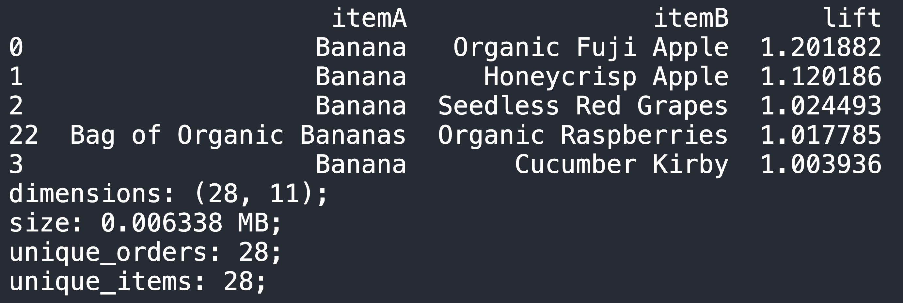

TLDR; Input each customer orders that contains the products & from which departments, Output are 2 things, pair of products (and their departments) that happen to be bought together more often than random, hence we can recommend management to re-arrange these departments side-by-side & the product pair side-by-side too to unconsciously trigger customer impulsive buying.
This article will be divided into 3 segments :
- Scenario : The problem statement
- Result : How are we tackling the problem ?
- Call-To-Action : What's the solution of the problem ?
---------------------------
Have you ever thought of going to supermarket, knowing that you just want to buy WHAT IS IN YOUR LIST, but ended up buying half of the supermarket?

Yeah, welcome to Social Engineering 101 in retail, this trick has been implemented by the Data Scientist team in that retail company in order to maximise the unconscious impulsive buying.
Scenario
We are working in a supermarket retail industry, and management hand us 3 datasets. Below the sneak-peek of the data
- First is "orders_prod_prior", contains previous order contents for all customers.
- Second is "products", contain each of the product details that the company has.
- Third is "departments", contains all the departments that the company has.
With given data above, we can answer these two important question in order to implement the social engineering:
- Given all past orders, which dept that always come together ?
- Once the dept known, which products to be specific on each od these dept are always bought together ?
With those two questions answered, business can reorganize the store layout & run promotional campaign to bundle these item together.
Result
Translating from those two business requirements to technical requirements, we can answer those questions by using Market Basket Analysis - Association Rule.
Oversimplifying it, what it does is that, with each order data that contains products that has been purchased, we can see the occurences of particular item A & B happen on every order. If its happen very often, we can conclude that these two products are come in pairs, and what management can do to encourage this to happen more is to put these two item side-by-side.
Below is the simulation with the smaller dataset in order to understand "Associate Rules" intuitively
With above example, we can put apple & egg side-by-side in order to trigger the customer impulsive buying. you can read in-depth analysis & its formal answers here.
With that being said, let's solve this problem with our favourite OSEMN framework!
- Obtain
- Scrub
- Explore
- Model
- What we want is to calculate each pair of items relationships (lift value). say we have item A & B.
- if lift > 1, A & B occur together more often than random
- if lift = 1, A & B occur together only by chance (random)
- if lift < 1, A & B occur together less often than random
- Calculate lift(A,B) = Pr(A & B bought together) / (Pr(A bought) * Pr(B bought))
- where Pr(A bought) : Probability item A is bought
- Below is the result of best department pair & sort from highest lift value to lowest
- And for product pairs 
- iNterpret
- From Department dataframe, we can ask the team to arrange:
- "Personal Care" & "Household" together
- "International" & "Canned Goods" & "Dry Goods Pasta" & "Meat Seafood" together
- "Babies" placed between "Breakfast" & "Dry Goods Products"
- From Product dataframe:
- Top association products were coming from the SAME ITEM FAMILY
- Banana & Organic Fuji Apple (Fruits Family)
- Banana & Seedless Red Grapes (Fruits Family)
- This can be implemented in "Recommended system" backend. (eg if cust buy banana, recommend fuji apple, or red grapes)
- General solution that we can give to management ?
- Get lift > 1 dept, and put dept rows side-by-side
- For each items in dept, Get lift > 1 products, and put it together accordingly (and share these pairings to marketing team to create 'pair discount'
Data is given & shown sneak-peek in 'Scenario' section
Since we want to know two things (which depts are the best pairs, and which products are the best pairs), we just need to prepare two dataframes such that it is suitable for our 'Association Rule' derivation (which is order_id and item_id). Below are the sneak-peek of each of the dataframes.
---------------------------
Data Prep on : Finding which depts are the best pairs
---------------------------
Data Prep on : Finding which products are the best pairs
To make things simple, we've created function to get Association Rule derivation, we rename both targeted column to item_id. (no more product_id or dept_id)
We've skipped entirely this part, as deriving 'Association Rule' on 3 million+ rows dataset is computationally expensive (nearly consumed 16GB of RAM)
I've made a separated article on this part, go check it out here.
This is the part where we implement the Association Rules function. You can check out the full code in my kaggle, but oversimplifying it:
---------------------------
---------------------------
Call-To-Action
Merchendise team can re-arrange these 8 depts as per mentioned above in iNterpret
Since almost all products that comes in pair are in the same departments, for each departments, put those pair products side-by-side.
- We can share these product pairs to the marketing team to promote 'Bundle sales' for all these pairs that has top10 highest lift-value
Final words from Dwi
About the "Explore" part that we skipped, you can check it out in this article!
It's too much to digest this topic in one article, hence why it only covers bare minimum & focus on call-to-action. For interested reader that want to fully digest this knowledge, head over to my code in my kaggle notebook HERE and leave a like on the notebook!